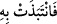

melek (Cebrâil) Meryem’e düzgün bir insan şeklinde görününce, ona bakan Meryem’in
lezzetinin şiddetinden dolayı menîsi rahmine indi. İşte Meryem’de lezzeti gerektiren
üflemeden doğan bu menîden İsa meydana geldi. Tabîatçıların (biyologların)
söylediklerinin aksine İsa, sadece annesinin menîsinden meydana gelmiştir. Çünkü
tabîatçılar eşlerin sadece birisinin menisinden çocuğun oluşmasını kabul etmezler.
Rivayet edildiğine göre Hz. İsa’nın doğumu, Peygamber Efendimiz (a.s.)’dan 571 sene
önce idi. O hâlâ hayattadır; gökten yere inecek ve insanları, Peygamberimizin dinine
çağıracaktır.
Büyüklerden birisi şöyle demiştir: Eğer Cebrâil ruhu üflerken insan sûretinde
gözükmeseydi İsa (a.s.) rûhânîler gibi olacaktı. Eğer Hz. Meryem Cebrâil (a.s.)’ın
şerîatlarda câiz olmayan bir şekilde kendisiyle beraber olmak isteyen bir beşer
olduğunu tahayyül edip canı sıkılmış ve gönlü daralmış bir halde ondan Allâh’a
sığındığında Cebrâil (a.s.) ona üfleseydi, annesinin durumu İsa (a.s.)’a tesir
edeceğinden kimsenin çirkinliğine dayanamayacağı bir şekilde dünyaya gelecekti.
Çünkü çocuk, anne-babaya baskın olan psikolojik durumlar ve bedenî şekillere göre
oluşur.
Cebrâil (a.s.), Hz. Meryem’e: “Ben ancak Rabb’inin elçisiyim. Sana tertemiz bir
çocuk bağışlamak için” O’nun katından geldim.” deyince, onun Rabb’i tarafından
kendisine gönderildiğini anladığı için sıkıntısı dağıldı ve Allâh’ın kendisine İsa’yı
müjdelediğini hatırladığı için de gönlü ferahlandı. Nitekim âyette şöyle buyurulmuştur:
“Ey Meryem! Allah sana kendisinden bir Kelime’yi müjdeliyor. Adı Meryem oğlu
İsa’dır. Mesîh’tir; dünyada da, ahirette de itibarlı ve Allâh’ın kendisine yakın
kıldıklarındandır.” (Âl-i İmran, 3/45)
Melek, Meryem’in gönlü açılıp rahatlayınca ona ruhu üfledi. İsa da annesinin durumu
kendisine tesir ettiği için gönlü rahat ve huzurlu bir şekilde dünyaya geldi.
Hz. Meryem’in hâmilelik süresi konusunda âlimler ihtilâf etmişlerdir. Aynı şekilde
Hz. Âmine’nin Peygamber Efendimiz’e hâmilelik süresi de ihtilâflıdır.
İbn Abbas (r.anhümâ)’dan bir rivâyete göre, gebelik ve doğurma müddeti bir saat idi.
Bazıları bu rivâyeti daha doğru görmüştür. Çünkü İsa (a.s.) yaratılış safhalarından geçen
bir nutfeden yaratılmamıştır. __WORD__ ifadesindeki takip “fâ”sı ile atfedilmesi de bunu
kuvvetlendirmektedir.
Fakir (Bursevî) der ki: Bu gibi “fâ”lar, bazen hükmün tertîbini/sırasını gösterir. Hz.
İsa’nın meniden yaratılmadığını söylemek açık bir yanlıştır. Çünkü daha önce de
belirtildiği üzere İsa (a.s.) Meryem’in gerçek suyundan ve Cebrâil’den vehmettiği sudan
oluşmuştur. Zâhirî bir sebep olmadan onun bu şekilde benzersiz olarak yaratılması,
bütün durumlarının olağanüstü (harikulâde) olmasını gerektirmez.
Yine İbn Abbas (r.anhümâ)’dan gelen başka bir rivâyette ise Meryem’in hâmileliği
kadınların çoğunda olduğu gibi dokuz ay sürmüştür. Çünkü bu süre daha az olsaydı
burada Meryem’in övülen özellikleri arasında zikredilirdi. Yine İsa’nın sekiz aylık